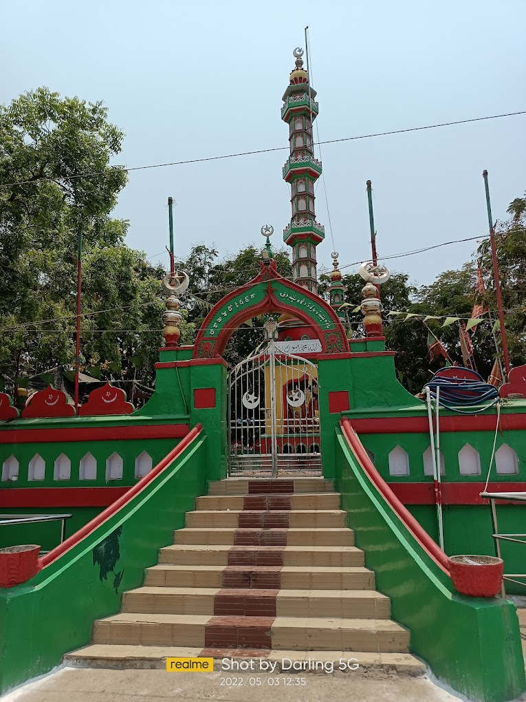

Bara Shaheed Dargah

Temple Name: Bara Shaheed Dargah
History: The Bara Shaheed Dargah in Nellore, Andhra Pradesh, India, was built in memory of 12 martyrs who died in a battle that is thought to have taken place over 1,200 years ago. The name "Bara Shaheed Dargah" translates to "Shrine of Twelve Martyrs" in Urdu.
Maps